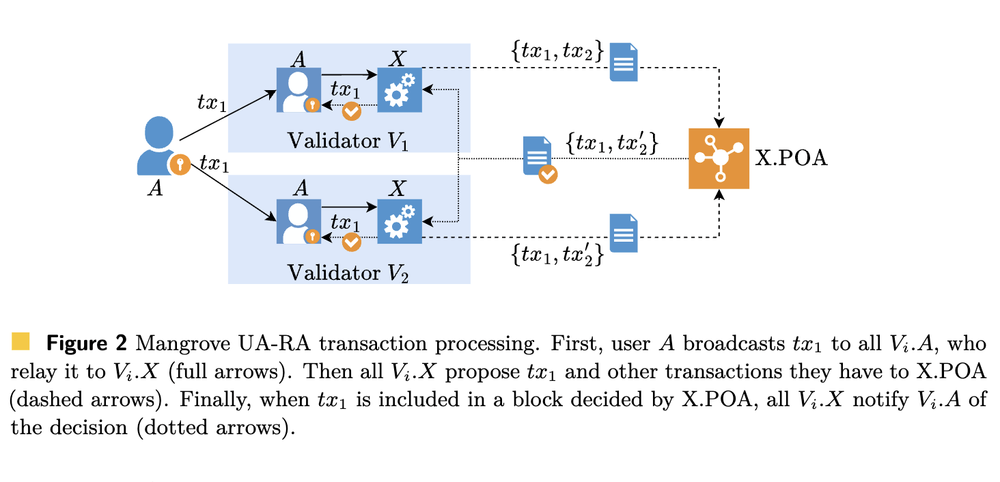

Anton Paramonov, Yann Vonlanthen, Quentin Kniep, Jakub Sliwinski, Roger Wattenhofer
Preprint
Mangrove is a novel scaling approach to building blockchains with parallel smart contract support. Unlike in monolithic blockchains, where a single consensus mechanism determines a strict total order over all transactions, Mangrove uses separate consensus instances per smart contract, without a global order. To allow multiple instances to run in parallel while ensuring that no conflicting transactions are committed, we propose a mechanism called Parallel Optimistic Agreement. Additionally, for simple transactions, we leverage a lightweight Byzantine Reliable Broadcast primitive to reduce latency. Mangrove is optimized for performance under optimistic conditions, where there is no misbehavior and the network is synchronous. Under these conditions, our protocol can achieve a latency of 2 communication steps between creating and executing a transaction.

@article{paramonov2025Mangrove:Fast,
author = {Anton Paramonov and Yann Vonlanthen and Q. Kniep and Jakub Sliwinski and Roger Wattenhofer},
title = {Mangrove: Fast and Parallelizable state replication for Blockchains},
year = {2025}
}